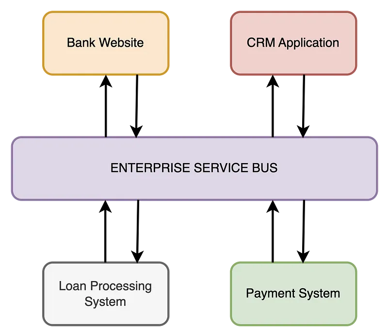

Enterprise Service Bus - a huge thing for huge systems
Basically it is the mechanism to keep all the components on the same side regarding the data Meaning that this is a mechanism to support real live data exchange between all the applications inside the system
It is vital to say, that it is not a technology it is a pattern, this means that ESB can be implemented via endless array of different technologies.
So, let's draw (obviously I've stolen this picture from some article)  Here it is shown that different systems use ESB in order to get and send data across all other services. It is vital to state that this approach should only be used when the system may be called big and you have an enormous amount of data
How you can implement it ?¶
- Message broker that supports fan out principles
- A set of services that pulls and updates the data from each service to each service
- etc
What technologies to look at ?¶
- Apache Camel
- WSO2 Enterprise Integrator
- MuleSoft Anypoint Platform
- Talend ESB